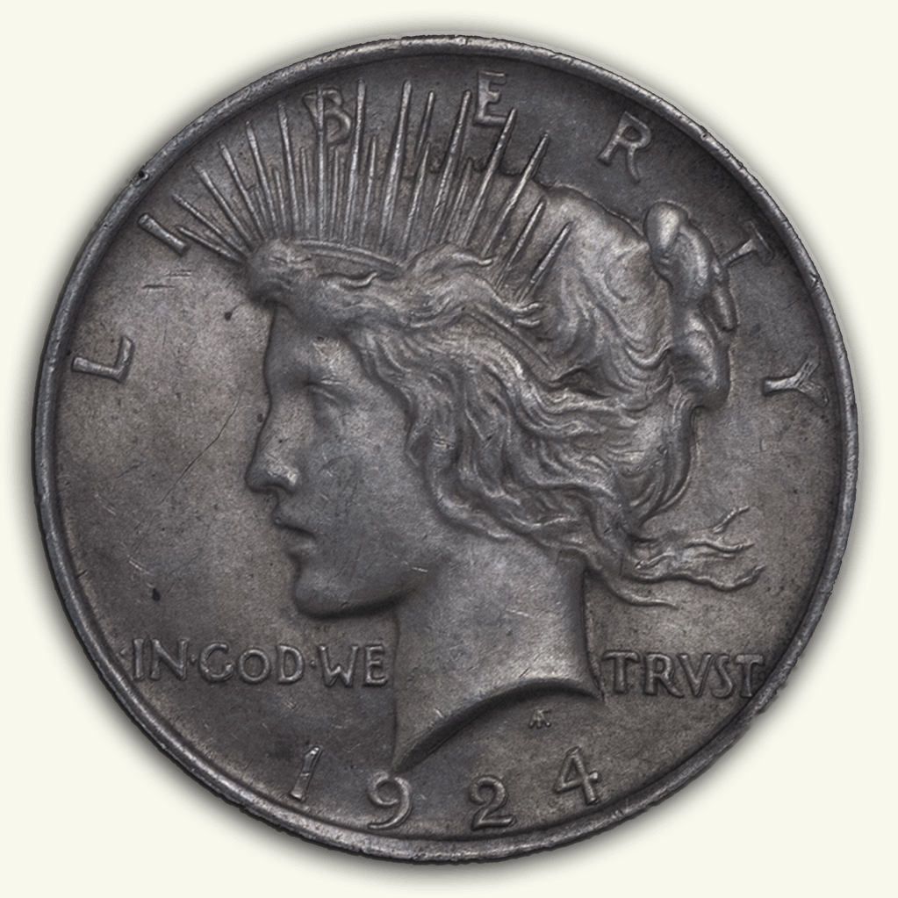

tristan boyar coin archive
Home
About
Coins By
Country
Year
Welcome to the Tristan Boyar Coin Archive!

The Tristan Boyar Coin Archive is an attempt to catalog my personal coin collection and keep in in an accessible, online location. This site is still very much a work in progress.